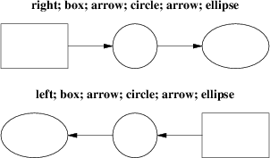
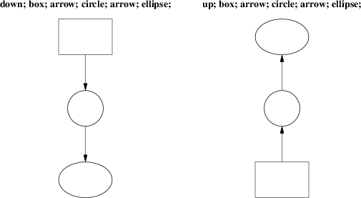
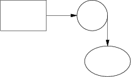

We’ve already seen how to change the direction in which objects are composed from rightwards to downwards. Here are some more illustrative examples:

Figure 8-1: Effects of different motion directions (right and left)

Figure 8-2: Effects of different motion directions (up and down)
Something that may appear surprising happens if you change directions in the obvious way:

Figure 8-3: box; arrow; circle; down; arrow; ellipse
You might have expected that program to yield this:

Figure 8-4: More intuitive?
But, in fact, to get Figure 8.3 you have to do this:
.PS box; arrow; circle; move to last circle .s; down; arrow; ellipse .PE
Why is this? Because the exit point for the current direction is already set when you draw the object. The second arrow in Figure 8.2 dropped downwards from the circle’s attachment point for an object to be joined to the right.
The meaning of the command move to last circle .s should be obvious. In order to see how it generalizes, we’ll need to go into detail on two important topics; locations and object names.